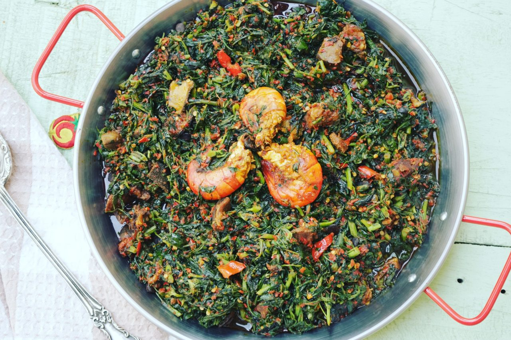

My Favourite Meal
EFO RIRO

About Efo Riro
Efo riro is one of Nigerian's famous dishes. It is a vegetable dish native to the Yoruba people. Some people say it is the Yoruba version of edikang ikong soup. The word, is derived from two Yoruba words, efo which means green leafy vegetable and riro which means to stir. The vegetables used to cook this soup are 'Efo shoko' or 'efo tete', which you can substitute for spinach. This meal can be served with steamed rice or boiled yam. It can also be enjoyed with amala, fufu, pounded yam or any swallow of choice.
Ingredients For Efo Riro (Recipe serves 5 or 6 people.)
- 500g Efo shoko or Efo tete (spinach leaves)
- 1/2 cup of Iru (whole locust beans)
- 5 tatashe (red bell) peppers
- 3 ata rodo (scotch bonnet or habanero pepper)
- 300g beef
- 100g shaki (cow tripe)
- 100g ponmo (cow skin)
- 1 cup eja sawa (smoked fish)
- 1 cup eja osan (dry fish)
- Stock fish
- 1/2 cup ground crayfish
- 1 medium red onion - diced
- 20cl palm oil
- 3 small stock cubes
- Salt to taste *You can add a variety of meats and fish to Efo Riro like snails and other offals
Pre-Preparation for Efo Riro
- Wash the soko vegetables in warm water to get rid of the dark juice. Chop vegetables
- Soak stock fish, if you are using the hard one for a few hours, until soft. Debone.
- Deseed the peppers and blend until coarse
- Rinse the iru and set aside
- Rinse the eja osan properly, shred to bits and set aside. *You will need all your ingredients prepared before you start.
Preparing Efo Riro
- Boil and season your meats with salt, onions and stock cubes, starting with the shaki first which takes longer to soften than the others. Use as little water as possible, topping up as you cook, as this soup doesn't need much water. Add the stock fish when the shaki starts to curl. When the shaki is almost done, add the other meats, except the dry fish. When all the meats and fish have almost softened properly, add the eja sewa.
- Boil your blended peppers until there is no more water inside.
- In another pot, heat up palm oil and fry the onions until translucent. Add the boiled peppers and iru. Fry until it forms a thick paste.
- Once fried, add the meats and ground crayfish. Be careful and add the stock in small spoonfuls. You do not want watery Efo Riro. Cook on low heat here for about 7 minutes or until you have a semi-thick stew. Taste for salt and season as you like.
- Add the vegetables and dry fish, and stir. Cook on very low heat for about 3 minutes and take off the fire.
- Serve hot with any swallow of your choice or rice. Enjoy!